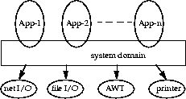
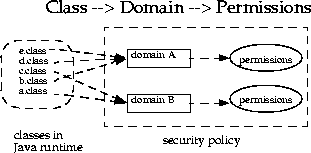

| CONTENTS | PREV | NEXT |
A fundamental concept and important building block of system security is the protection domain [Saltzer and Schroeder 75]. A domain can be scoped by the set of objects that are currently directly accessible by a principal, where a principal is an entity in the computer system to which permissions (and as a result, accountability) are granted. The sandbox utilized in JDK 1.0 is one example of a protection domain with a fixed boundary.
The protection domain concept serves as a convenient mechanism for grouping and isolation between units of protection. For example, it is possible (but not yet provided as a built-in feature) to separate protection domains from interacting with each other so that any permitted interaction must be either through trusted system code or explicitly allowed by the domains concerned. Note that existing object accessibility rules remain valid under the new security architecture.
Protection domains generally fall into two distinct categories: system domain and application domain. It is important that all protected external resources, such as the file system, the networking facility, and the screen and keyboard, be accessible only via system domains. The figure below illustrates the domain composition of a Java application environment.
 [D]A domain conceptually encloses a set of classes whose instances are granted the same set of permissions. Protection domains are determined by the policy currently in effect. The Java application environment maintains a mapping from code (classes and instances) to their protection domains and then to their permissions, as illustrated by the figure below.
 [D]A thread of execution (which is often, but not necessarily tied to, a single Java thread, which in turn is not necessarily tied to the thread concept of the underlying operation system) may occur completely within a single protection domain or may involve an application domain and also the system domain. For example, an application that prints a message out will have to interact with the system domain that is the only access point to an output stream. In this case, it is crucial that at any time the application domain does not gain additional permissions by calling the system domain. Otherwise, there can be serious security implications.
In the reverse situation where a system domain invokes a method from an application domain, such as when the AWT system domain calls an applet's paint method to display the applet, it is again crucial that at any time the effective access rights are the same as current rights enabled in the application domain.
In other words, a less "powerful" domain cannot gain additional permissions as a result of calling or being called by a more powerful domain.
This discussion of one thread involving two protection domains naturally generalizes to a thread that traverses multiple protection domains. A simple and prudent rule of thumb for calculating permissions is the following:
doPrivileged method (see below), the
permission set of the execution thread is considered to include a
permission if it is allowed by the said code's protection
domain and by all protection domains that are called or entered
directly or indirectly subsequently.doPrivileged method enables a piece of trusted code to
temporarily enable access to more resources than are available
directly to the application that called it. This is necessary in
some situations. For example, an application may not be allowed
direct access to files that contain fonts, but the system utility
to display a document must obtain those fonts, on behalf of the
user. We provide the doPrivileged method for the
system domain to deal with this situation, and the method is in
fact available to all domains.
During execution, when access to a critical system resource (such as file I/O and network I/O) is requested, the resource-handling code directly or indirectly invokes a special AccessController class method that evaluates the request and decides if the request should be granted or denied.
Such an evaluation follows and generalizes the "rule of thumb" given above. The actual way in which the evaluation is conducted can vary between implementations. The basic principle is to examine the call history and the permissions granted to the relevant protection domains, and to return silently if the request is granted or throw a security exception if the request is denied.
Finally, each domain (system or application) may also implement additional protection of its internal resources within its own domain boundary. For example, a banking application may need to support and protect internal concepts such as checking accounts, deposits and withdrawals. Because the semantics of such protection is unlikely to be predictable or enforceable by the Java 2 SDK, the protection system at this level is best left to the system or application developers. Nevertheless, whenever appropriate, we provide helpful primitives to simplify developers' tasks. One such primitive is the SignedObject class, whose detail we will describe later.